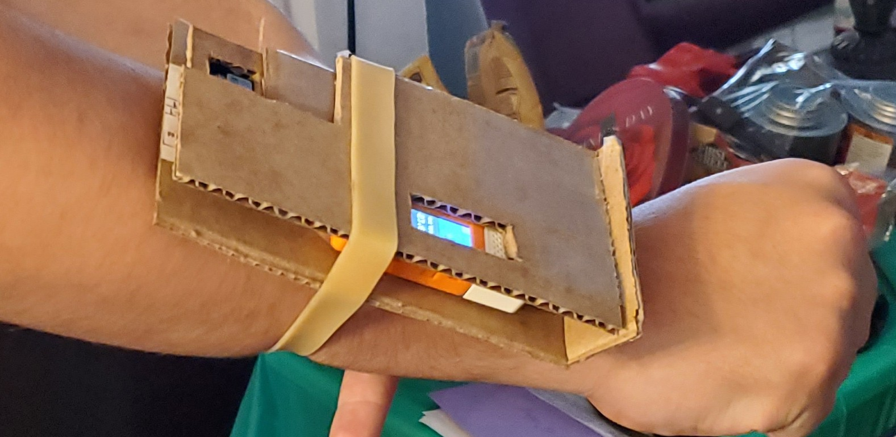
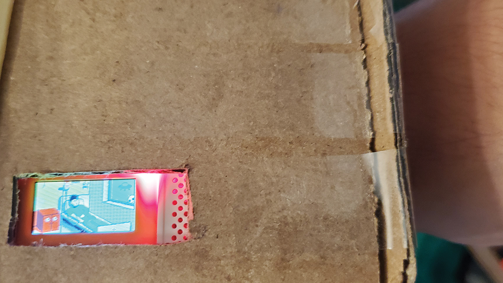
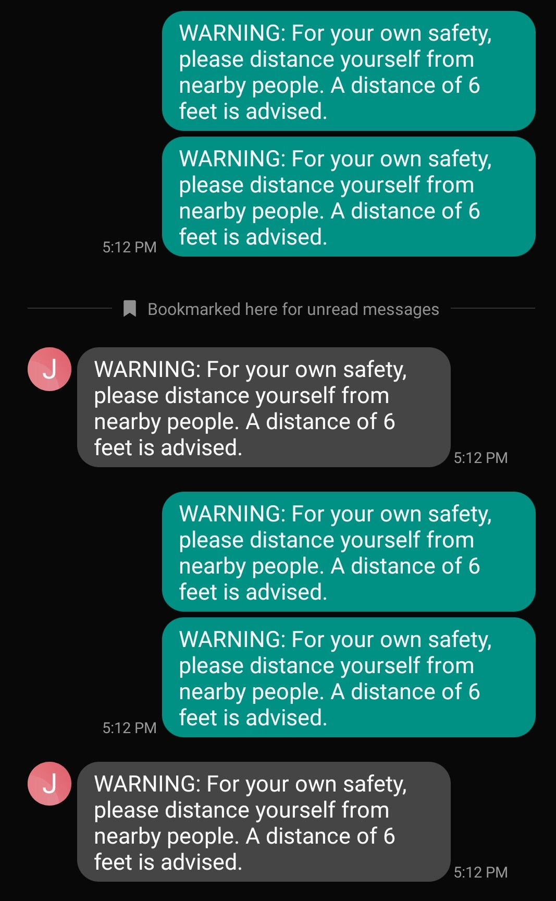

CSMA 112
CSMA 112
Professor Nikita Pashenkov
This was the project I was most proud of in the course. It challenged my knowledge of C and forced me to learn how to integrate a great number of libraries in order to acheive it. We had to prototype a practical tool someone could use in the spirit of social distancing. I chose to prototype a wearable device, similar to a fitbit, that would sense people that were too close and give feedback. The feedback in this case was to annoyingly beep at you, toggle between two jpgs, and send a notification to your phone via IFTTT.